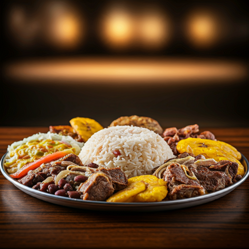

BANDEJA PAISA

Un mar de sabores en un solo plato:
La bandeja paisa es una sinfonía de sabores que deleita todos los sentidos. Imagina un plato generoso repleto de arroz blanco, frijoles rojos cocidos a la perfección,
jugosa carne asada, chorizo criollo, chicharrón crujiente y un huevo frito a tu gusto.
Pero eso no es todo: la bandeja paisa también incluye una tajada de plátano maduro frito, aguacate cremoso y una arepa caliente recién hecha.
Cada bocado es una explosión de sabores y texturas que te transportará directamente a las montañas antioqueñas.
El toque final lo dan el hogao, una salsa de tomate y cebolla caramelizada, y un chorrito de limón que realza todos los ingredientes. ¡Una experiencia culinaria que no olvidarás!
INGREDIENTES (para 4 persosnas)
- 2 tazas de Arroz blanco
- 2 tazas de Frijoles rojos cocidos
- 500g Carne molida
- 300g chicharrón
- 4 Chorizo
- 1 pezuña de cerdo
- 4 Huevos
- 2 Plátanos maduro
- 1 Aguacate
- 4 Arepa
- 1 cebolla
- sal y pimienta al gusto
- 1 zanahoria
PREPARACION
- ARROZ: Cocina el arroz blanco según las instrucciones del paquete
- carnes: sofrie la carne molida en una sarten (reserva)
- Prepara el hogao: En una sartén, sofríe la cebolla, el ajo, el tomate y el ají dulce picados hasta que estén suaves. (Reserva)
- FRIJOLES: coloca en una olla con agua fresca, la pezuña de cerdo, la cebolla cortada en trozos grandes y las zanahorias peladas y cortadas en rodajas. Lleva a fuego medio-alto hasta que hierva,
luego baja el fuego y cocina a fuego lento durante aproximadamente 1 hora o hasta que los frijoles estén suaves.
- Dora los chorizos: Corta los chorizos en rodajas y dóralos en una sartén hasta que estén dorados.
- Fríe el plátano: Pela los plátanos maduros, córtalos en rodajas y fríelos hasta que estén dorados y caramelizados.
- Fríe los huevos al gusto.
- Arma la bandeja: Coloca una porción de arroz en cada plato. Agrega los frijoles, la carne, el chorizo, el huevo, el plátano, el aguacate y la arepa.